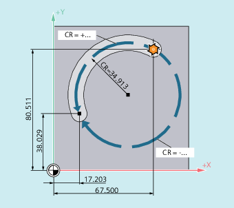

Circular interpolation version, that uses the radius and end point of a circular contour element for the interpolation.
| Note |
|
The following restrictions must be considered in the circular interpolation with a radius and end point:
Remedy: To program full circles and half circles, use another type of circular interpolation! |
Syntax
G2/G3 X… Y… Z… CR=±...Meaning
| Circular interpolation clockwise | |
Effective: | Modal | |
| Circular interpolation counter-clockwise | |
Effective: | Modal | |
| Circle end point in Cartesian coordinates. Depending on the currently valid dimensional notation setting | |
| Circle radius The sign indicates whether the traversing angle is to be greater than or less than 180°. A positive sign can be omitted. | |
| Traversing angle ≤ 180° | |
| Traversing angle > 180° | |
Note | ||
Examples
Example 1: Milling
| Program code | |
|---|---|
| N10 G0 X67.5 Y80.511 | |
| N20 G3 X17.203 Y38.029 CR=34.913 F500 | |
| ... |
Example 2: Turning

| Program code | |
|---|---|
| ... | |
| N125 G1 X40 Z-25 F0.2 | |
| N130 G3 X70 Z-75 CR=30 | |
| N135 G1 Z-95 | |
| ... |